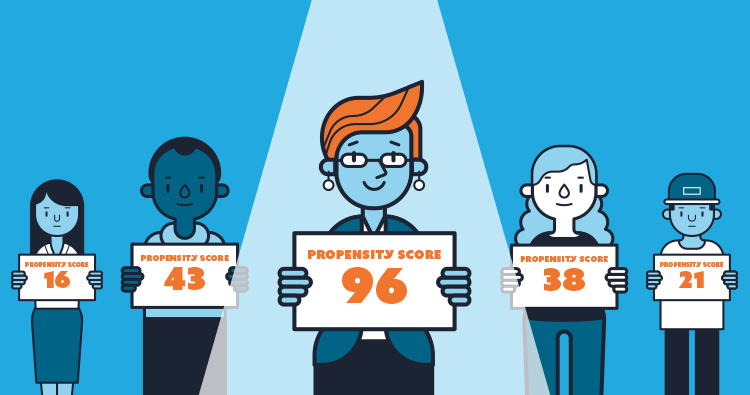
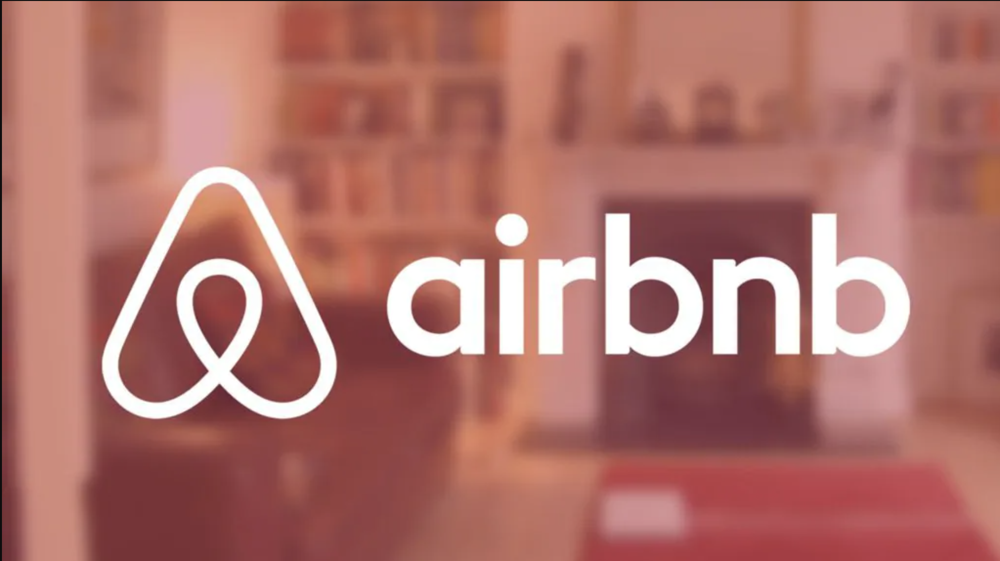
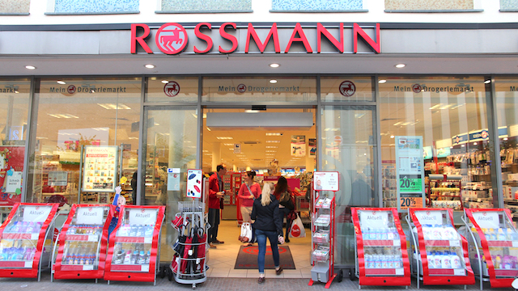
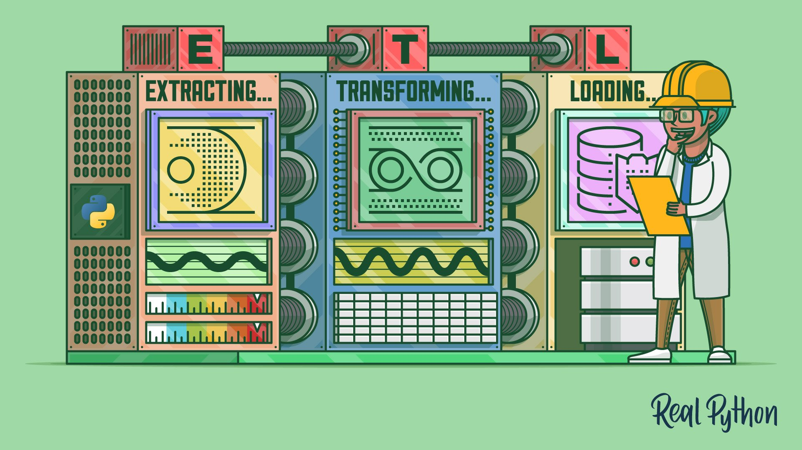

Customer Satisfaction Prediction
Customer satisfaction measures how products and services offered by companies and organizations meet customer expectations. This project aims to identify dissatisfied customers and take proactive steps to improve their happiness before it's too late.
Languages & Tools
- Machine Learning.
- CSV files.
- Python, Pandas, Numpy, Matplotlib, Seaborn, SciPy, Sklearn and wordcloud.
- Anaconda and Jupyter Notebook.
- Git and GitHub.
- Classification.
- Sentiment Analysis.
- Classification.
- NLP.
Cardio Catch Disease
Cadio Catch Disease is a company whose business model is detecting heart disease in the early stages. The company offers an early diagnosis of cardiovascular disease for a certain price. Currently, the diagosis has been made manually. The purpose of this project was to build a model to predict heart disease to improve diagosis precision.
Languages & Tools
- Machine Learning.
- Excel.
- Python, Pandas, Numpy, Matplotlib, Seaborn, SciPy, Sklearn and Boruta.
- Anaconda and Jupyter Notebook.
- Git and GitHub.
- Classification.

Customer Propensity to Purchase
Our Client is an early-stage e-commerce company selling various products from daily essentials (such as Dairy & vegetables) to high-end electronics and home appliances. The purpose of this project was to build a model to predict the purchase probability of each user in buying a product with the help of a propensity model.
Languages & Tools
- Machine Learning.
- Excel.
- Python, Pandas, Numpy, Matplotlib, Seaborn, SciPy, Sklearn and Boruta.
- Anaconda and Jupyter Notebook.
- Git and GitHub.
- Classification.

Airbnb User Destination
Airbnb is an American company which operates an online marketplace focused on short-term homestays and experiences. Its business model allows anyone to offer or book accommodations around the world. This is a Machine Learning project and the purpose was to forecast country destination of the Airbnb users.
Languages & Tools
- Machine Learning.
- Excel.
- Python, Pandas, Numpy, Matplotlib, Seaborn, SciPy, Sklearn and Boruta.
- Anaconda and Jupyter Notebook.
- Git and GitHub.
- Classification.

Rossmann Store Sales
Rossmann is a real German drugstore which is available in many European countries. This is a Machine Learning project and the purpose was to forecast sales revenue of the next 6 weeks for Rossmann.
Languages & Tools
- Machine Learning.
- Excel.
- Python, Pandas, Numpy, Matplotlib, Seaborn, SciPy and Sklearn.
- Anaconda and Jupyter Notebook.
- VSCode.
- Git and GitHub.
- Regression.
- Time Series.
House Rocket insight
House Rocket is a fictitious company whose business model is purchase and sale of real estate. This is a insight project and the purpose was to find the best business opportunities in the real estate market and maximize the company's revenue.
Languages & Tools
- Libre Office.
- Python, Pandas, Numpy, Matplotlib and Seaborn.
- Anaconda and Jupyter Notebook.
- PyCharm.
- Git and GitHub.
- Streamlit and Heroku Cloud.

House Rocket Machine Learning
House Rocket's CEO asked for a Machine Learning model to make better decisions in their real estate business model. The purpose was to determine the best business opportunities in the real estate market and maximize the company's revenue using Machine Learning modeling.
Languages & Tools
- Libre Office.
- Python, Pandas, Numpy, Seaborn, Plotly, Matplotlib, SciPy, Sklearn, Tqdm and Dateutil.
- GitHub.
- Google Colab.

Star Jeans
Star Jeans is a fictitious American enterprise whose business model is the sale of jeans by B2C ecommerce. Eduardo and Marcelo are Brazilian businessmen and decided to build a jeans company in the United States of America. The initial idea is the sale of jeans to men.
Languages & Tools
- Webscraping.
- Python, Pandas, Numpy, Seaborn, requests and BeautifulSoup.
- Google Colab.
- VSCode.
- Git and GitHub.

Telecom Customer Churn
Customer churn is one of the essential metrics that every business must evaluate to grow. The purpose was to build a machine learning model to help predict customers likely to churn and facilitate taking business actions to reduce the churn.
Languages & Tools
- Classification.
- Microsoft Excel.
- R.
- Neural Network and Keras.
- RStudio and Quarto.
- GitHub.

Artificial Neural Network (ANN) modeling
I used ANN to predict the acetic anhydride selectivity by the maximization of its yield and the minimization of steam residue. Using predictive modeling in this case is quite profitable because reduce feedstock waste and better manegement of the final product yield.
Languages & Tools
- Microsoft Excel.
- R, readxl and neuralnet.
- RStudio.
- GitHub.

Data Pipeline with Apache Airflow and Apache Spark
The process of extracting, transforming and loading data from twitter's API was automated by the creation of a data pipeline. The pipeline was created using Airflow and Spark. The extracted data was analyzed to the generation of insights.
Languages & Tools
- Libre Office.
- Python, Pandas, Numpy and Matplotlib.
- Google Colab.
- PyCharm.
- Apache Airflow and Apache Spark.
- Git and GitHub.

Covid-19 Data Analysis
This is a data analysis project in order to explore COVID-19 world data using SQL with SQLite and DBeaver. We treated and explored the datasets to create a dashboard with Tableau and then deployed it online.
Languages & Tools
- DBeaver.
- SQL.
- SQLite.
- Excel.
- Tableau.
- Git and GitHub.